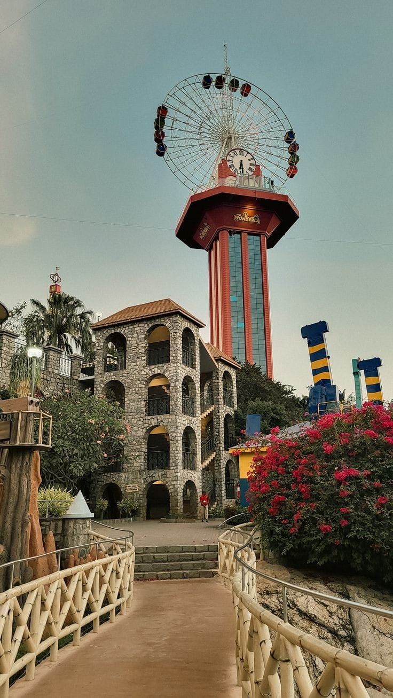
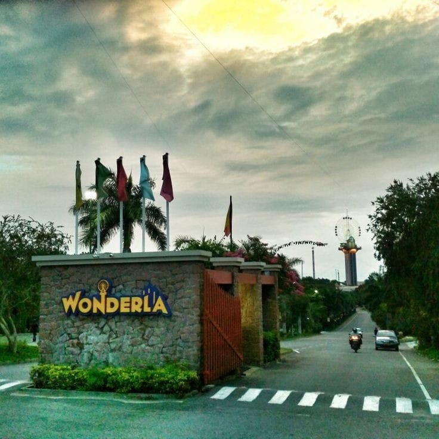

"Unleash the Thrill at Wonderla – Bangalore’s Ultimate Adventure Park!"
Wonderla is one of India’s most popular amusement parks, located just 28 km from Bangalore. It offers an exhilarating mix of water rides, land-based attractions, and live entertainment, making it the perfect place for families, friends, and thrill-seekers.Opened in 2005, Wonderla has since become a favorite destination for both local and international tourists. Known for its world-class rides and cleanliness, it guarantees a memorable day of fun and excitement.
How To Reach
By Bus: KSRTC operates buses to Wonderla from various parts of Bangalore.
By Car: Wonderla is well-connected to Bangalore, and it’s approximately a 30-minute drive from the city center.
Key Attractions
Wave Pool: Relax and enjoy the waves at the massive wave pool.
Rain Dance: A fun and lively experience where visitors can dance to music under water jets.
Lazy River: Float lazily along the winding river with scenic surroundings.
Water Slides: Multiple thrilling water slides suitable for all ages, from high-speed slides to more relaxed ones.
Roller Coasters: High-speed roller coasters like the Recoil (India’s first inverted roller coaster) and Equinox offer adrenaline-packed experiences.
Special Events and Offers
Wonderla Annual Events: The park hosts seasonal events like Halloween Night and New Year’s Eve Parties, where visitors can enjoy themed entertainment and rides.
Exclusive Offers: Wonderla also offers discounts and special passes for group bookings, family packages, and during festive seasons.
Visitor Information
Best Time to Visit: The best time to visit Wonderla is during weekdays, particularly in the cooler months (October to March) when the weather is pleasant. Avoid weekends and public holidays if you prefer less crowd.
Entry Fees: The park offers different ticket prices based on the rides, water rides, and special passes. Prices are available on the official website, with discounts available for children and groups.
Things to Do
Drop Zone: A sky-high freefall that provides a heart-racing plunge.
Bumper Cars: Enjoy a fun and competitive ride with bumper cars for all ages.
Xtreme Skater: A high-speed rotating ride that swings you in all directions.
Kiddie Rides: There are plenty of gentle rides like the Merry-Go-Round and Mini Ferris Wheel designed especially for children.
Virtual Reality (VR) Games: Enjoy immersive VR experiences and gaming activities for a futuristic adventure.
Live Entertainment and Shows
Live Music and Dance: The park frequently hosts live performances, including dance shows and music concerts, adding an extra layer of excitement to the experience.
Cultural Shows: Enjoy cultural performances and events showcasing traditional and contemporary art forms.
Visitor Tips
Carry Sunscreen: Protect yourself from the sun, especially when spending time in the water or outdoors.
Wear Comfortable Clothing: Since you'll be engaging in water rides and other physical activities, wear comfortable clothing and swimwear.
Lockers and Storage: There are locker facilities available to store your belongings while you enjoy the rides.